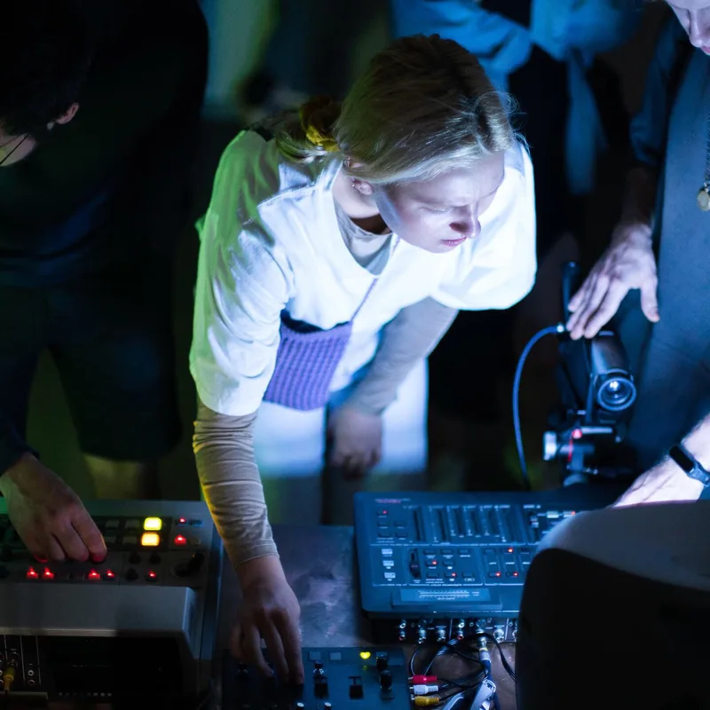
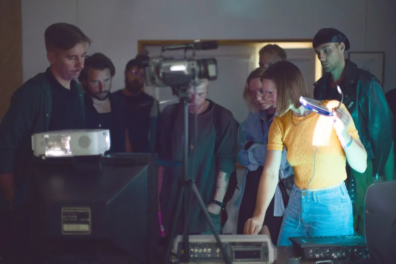
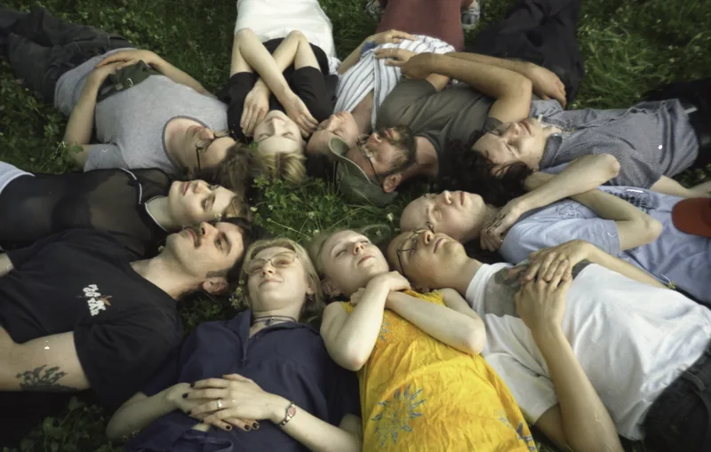

Video Feedback Plasticity 2022-2024
We are an integral part of the natural world, capable of observing its processes - including the phenomenon of feedback, which is also evident in nature. Understanding the complex systems that shape our reality is often aided by examining them on a human scale - such as through the lens of audio-visual equipment.
During the workshop, participants learn about the techniques for inducing feedback using video equipment from the 1980s and 1990s. Later on they explore ways of modulating this phenomenona. At the end for a moment each participant becomes an instrument themselve, expressing their experience through drawing. In 2023, together with a group of feedback enthusiasts, we organized a series of events titled IRIDISUNTO around this topic at Galeria Turnus in Warsaw.


